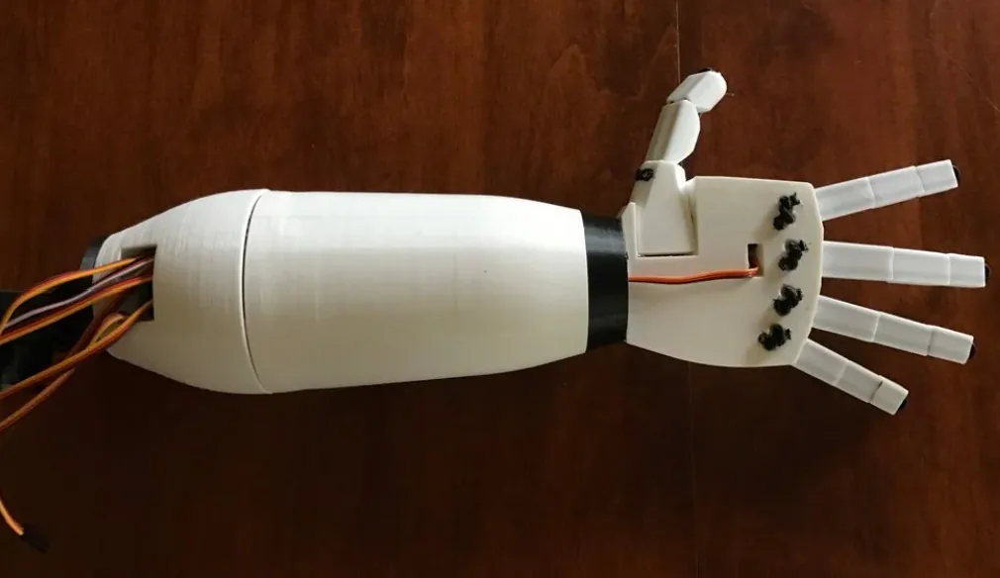

(03) Personal project · Mechatronics
Robotic hand
A 3D-printed, tendon-driven hand that copies my own finger movements in real time from a webcam.

Overview
I wanted to build a robot hand that you control just by moving your own. Over the summer I designed, printed and assembled a 7-DOF tendon-driven hand in Fusion 360. I also wrote a Python vision pipeline that turns live webcam footage of my hand into servo commands.
Mechanical design
Putting motors in the fingers makes them bulky and heavy, so the hand works like a human one. Tendons run through each finger to servos and pulleys mounted in the forearm, which keeps the fingers slim and puts the mass near the wrist.
- Dimensional tolerancing on every printed joint and pin, so parts assemble without post-machining and joints move freely without slop.
- Actuator integration: I iterated the forearm layout so the servos, pulleys and tendon routing all fit inside one printed shell.
- Independent articulation: each finger has its own tendon path, so it can flex without dragging its neighbors.
Control pipeline
The software runs from camera to motor in five steps:
- CaptureWebcam frames streamed into Python.
- Detect21 hand landmarks located on every frame.
- SolveInverse kinematics turns landmark positions into joint angles.
- MapAngles scaled to each servo's calibrated range.
- ActuateCommands sent over serial; the Arduino drives the servos.
The Arduino handles low-level motor control while Python does the heavy vision work, so both sides stay simple and fast enough for teleoperation that feels intuitive.
Integration & testing
Bringing the mechanical, electrical and software parts together needed several rounds of calibration and mechanical refinement. I tuned each finger's servo range against its real tendon travel, adjusted tension, and revised parts where motion bound up, until the hand followed my movements cleanly.
Top skills utilized
- Fusion 360
- Tendon-driven mechanisms
- Dimensional tolerancing
- Python
- Computer vision
- Inverse kinematics
- Arduino
- 3D printing